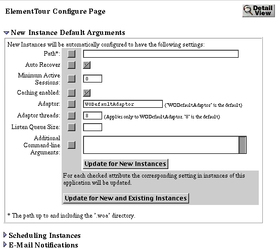

Table of Contents
Table of Contents  Next Section
Table of Contents
Next Section
Table of Contents  Previous Section
Previous Section
When you enter the name of your new application and click the Add Application button, Monitor displays the Application Configuration page:

First enter the full path to the WebObjects application in the Path field. For ElementTour running on Windows NT you might enter a string similar to the following example:
C:/Apple/Developer/Examples/WebObjects/Java/ElementTour/ElementTour.woaBe sure that the path specifies the built WebObjects application, including the .woa extension. You cannot start an instance of an application when the wrong path is specified, and Monitor will not provide feedback when you attempt to start such an instance. The executable name must be the name of the application-in this case "ElementTour" (or, on Windows NT, "ElementTour.exe"). Click the Update for New Instances button on the bottom of the form to save your changes.
The other fields on this form accept arguments to use when the application instance is run. For descriptions of these fields and as well as the checkboxes and the Update for New and Existing Instances button, see "Setting Command-Line Arguments in Monitor" .
Table of Contents Next Section